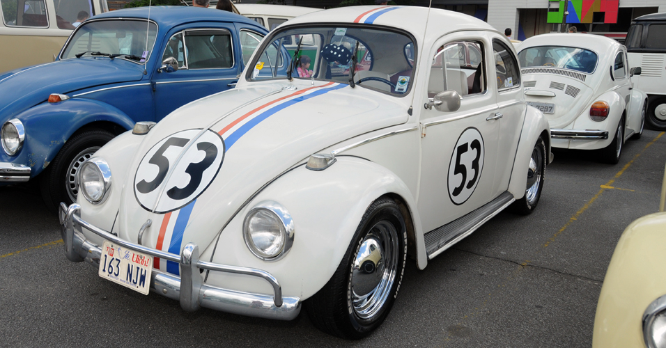

O Volkswagen Sedan (Fusca) ou Volkswagen Carocha (português europeu) foi o primeiro modelo de automóvel fabricado pela companhia alemã Volkswagen. Foi o carro mais vendido no mundo ultrapassando em 1972 o recorde que pertencia até então ao Ford Modelo T. O último modelo do VW Sedan foi produzido no México em 2003.
A história do Fusca é uma das mais complexas e longas da história do automóvel. Diferente da maioria dos outros carros, o projeto do Fusca envolveu várias empresas e até mesmo o governo de seu país, e levaria à fundação de uma fábrica inteira de automóveis no processo. Alguns pontos são obscuros ou mal documentados, já que o projeto inicialmente não teria tal importância histórica, e certos detalhes perderam-se com a devastação causada pela Segunda Guerra Mundial.
.  [AQUI ENTRA UM VÍDEO] Copyrigth 2015 - by Felipe Antunes Facebook | Twitter